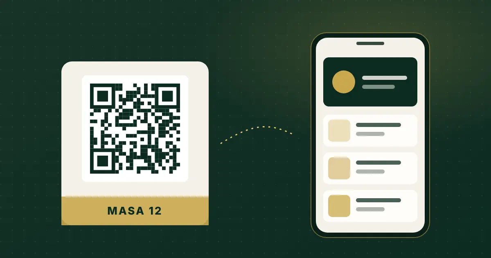

QR Menü Nedir? Restoran ve Kafeler İçin Kapsamlı Rehber
QR menü, masadaki kodu okutan misafirin menüyü uygulama indirmeden tarayıcıda açmasıdır. Ama PDF yüklemekle yönetilebilir bir menü sistemi kurmak aynı şey değil.

Kısa cevap
QR menü, masaya veya kapıya konan karekodun telefon kamerasıyla okutulmasıyla açılan web tabanlı menüdür. Misafir uygulama indirmez; işletme fiyat ve ürünleri panelden günceller, menü yeniden basılmadan güncel kalır.
QR menü tam olarak nedir?
QR menü, bir karekodun içine menü sayfasının adresinin yazılmasıdır. Misafir telefonunun kamerasını koda tuttuğunda tarayıcı açılır ve menü yüklenir. Arada indirilecek bir uygulama, oluşturulacak bir hesap yoktur.
Burada önemli bir ayrım var: karekod yalnızca bir kapıdır. Asıl farkı kapının arkasındaki sayfa belirler. Aynı karekod bir PDF dosyasına da, mobil için tasarlanmış ve panelden yönetilen bir menüye de gidebilir.
QR menü nasıl çalışır?
- Menü verisi hazırlanır. Kategoriler, ürünler, fiyatlar, açıklamalar, görseller ve varsa alerjen bilgileri girilir.
- Menünün bir web adresi olur. Bu adres işletmeye özeldir.
- Adres karekoda dönüştürülür. Kod masa kartına, kapı tabelasına veya peçeteliğe basılır.
- Misafir okutur, menü açılır. Telefonun yerleşik kamerası çoğu cihazda karekodu doğrudan tanır.
- İşletme günceller. Fiyat veya ürün değiştiğinde karekod aynı kalır; yalnızca menü verisi değişir.
Son madde, QR menüyü basılı menüden ayıran temel noktadır: fiyat değiştiğinde matbaaya gitmek gerekmez.
Masa bazlı karekod ne işe yarar?
Her masaya ayrı karekod verildiğinde menü, misafirin hangi masada oturduğunu bilerek açılır. Tek başına menü için bu gerekli değildir; ama garson çağrısı, hesap isteği veya masadan sipariş gibi işlemler eklenecekse talebin hangi masadan geldiği bilinmek zorundadır. QR Menu Official'da bu, QR Masa modülüyle yapılır: masaları tanımlar, her biri için yazdırılabilir kod üretirsiniz.
PDF menü ile dijital menü arasındaki fark
Pek çok işletme dijital menüye basılı menünün PDF'ini karekoda bağlayarak başlar. Hızlıdır, ama birkaç sorunu beraberinde getirir:
| Konu | PDF menü | Panelden yönetilen dijital menü |
|---|---|---|
| Telefonda okuma | Yakınlaştırma ve kaydırma gerekir | Ekrana göre düzenlenir |
| Fiyat güncelleme | Dosya yeniden hazırlanıp yüklenir | Ürün kaydında değiştirilir |
| Arama ve filtre | Yok | Ürün verisi girildiyse mümkün |
| Çoklu dil | Her dil için ayrı dosya | Dil seçici ile aynı menü |
| Garson çağrısı / sipariş | Yok | Sistem destekliyorsa eklenebilir |
| Ölçüm | Yok denecek kadar sınırlı | Görüntüleme ve ürün tıklaması izlenebilir |
PDF menü "yanlış" değildir; küçük ve nadiren değişen bir menü için yeterli olabilir. Ama fiyatlarınız sık değişiyorsa ya da menüyü servis akışına bağlamak istiyorsanız yönetilebilir bir sisteme ihtiyaç duyarsınız.
QR menü yasal mı? Fiziki fiyat listesi gerekiyor mu?
Kısa cevap: Türkiye'de masalardaki fiyat listesi karekodla gösterilebilir, ancak misafir isterse fiyat listesinin fiziksel olarak da gösterilmesi gerekir. Fiyat Etiketi Yönetmeliği'nde 11 Ekim 2025 tarihli Resmî Gazete'de yayımlanan değişiklik bu hükmü getirmiştir. Ayrıntıları ve işletme için uygulama listesini karekodla fiyat listesi rehberimizde anlattık.
Bu yazı hukuki danışmanlık değildir. Güncel metin için Resmî Gazete'yi ve Ticaret Bakanlığı duyurularını esas alın.
İyi bir QR menü sisteminde nelere bakmalı?
1. Güncelleme ne kadar kolay?
Ürün, fiyat ve kategori değişikliğini kimin, hangi ekrandan, kaç adımda yaptığına bakın. Çok sayıda ürününüz varsa toplu aktarma (ör. CSV) önemli hale gelir.
2. Telefonda gerçekten okunuyor mu?
Demo menüyü kendi telefonunuzda, dış mekân ışığında ve zayıf bağlantıda açın. Görsellerin geç yüklenmesi ve küçük yazı, misafirin ilk izlenimini belirler.
3. Ürün bilgisi ne kadar derin tutulabiliyor?
Porsiyon, ekstra, alerjen, kalori, rozet gibi alanlar yalnızca girildiğinde işe yarar. Filtreler bu veriye dayanır; sistem bunları kendisi "bilmez".
4. Turist misafiriniz var mı?
Çoklu dil desteğinde çevirinin nasıl girildiğini sorun: elle mi, toplu dosyayla mı, otomatik mi? Otomatik çeviri kolaydır ama yemek adlarında hata riski taşır; kontrolü siz yapmalısınız.
5. Menünün ötesine geçmesi gerekiyor mu?
Garson çağrısı, hesap talebi ve masadan sipariş gibi özellikler, menüyü bir servis aracına çevirir. Bunlar için talebin düştüğü bir servis paneli gerekir. Ödeme alıp almadığını ayrıca sorun; her sistem ödeme altyapısı değildir.
6. Neyi ölçebiliyorsunuz?
Menü görüntüleme ve ürün tıklaması, hangi ürünün ilgi gördüğünü gösterir. Ancak bu veri kasa satışıyla aynı şey değildir; ikisini karıştırmayın.
QR menüye geçiş: 7 adımlık kontrol listesi
- Mevcut menüyü tek bir tabloda toplayın: kategori, ürün adı, açıklama, fiyat.
- Porsiyon farkları ve ekstraları ayrı sütunlarda belirleyin.
- Alerjen ve içerik bilgisini mutfakla birlikte doğrulayın.
- Ürün fotoğraflarını aynı ışık ve açıyla, yatay ya da kare çekin.
- Masaları numaralandırın; masa bazlı kod kullanacaksanız listeyi çıkarın.
- Kodları dayanıklı malzemeye basın, okunabilirliği farklı telefonlarla test edin.
- Fiziki fiyat listesini talep halinde gösterebilecek şekilde hazır tutun.
Menünüzü hazırlarken sık yapılan hataları dijital menü hazırlama rehberinde ayrıca ele aldık.
Bir QR menünün telefonda nasıl göründüğünü görmek ister misiniz? Temel, Pro ve Plus paketlerinin demo menülerini kendi telefonunuzda açabilirsiniz.
Canlı Menüyü GörSık sorulan sorular
QR menü için müşterinin uygulama indirmesi gerekir mi?
Hayır. Karekod okutulduğunda menü telefonun tarayıcısında açılır. Çoğu güncel telefonun kamerası karekodu doğrudan tanır.
QR menü ile PDF menü aynı şey mi?
Değil. PDF menü basılı menünün dosyasıdır; telefonda yakınlaştırma gerektirir ve her değişiklikte yeniden yüklenir. Panelden yönetilen dijital menü ekrana göre düzenlenir ve ürün bazında güncellenir.
Fiyat değişince karekodu yeniden basmam gerekir mi?
Karekod menünün adresini taşıdığı sürece hayır. Fiyatı panelden değiştirirsiniz; aynı kod güncel menüyü açar.
Yalnızca QR menü kullanmak yeterli mi?
Fiyat Etiketi Yönetmeliği'ndeki 2025 değişikliğine göre masada fiyat listesi karekodla gösterilebilir; ancak tüketici isterse fiziksel olarak da gösterilmelidir. Güncel metni Resmî Gazete'den kontrol edin.
QR menü sipariş ve ödeme de alır mı?
Sisteme göre değişir. QR Menu Official'da Pro paketten itibaren masadan sipariş, garson çağrısı ve hesap talebi servis paneline düşer; sistem ödeme tahsil etmez.
Kaynaklar
- T.C. Ticaret Bakanlığı — Fiyat etiketinde yeni dönem başlıyor
- Resmî Gazete — 11.10.2025 tarihli ve 33044 sayılı sayı
- ISO/IEC 18004 — QR Code bar code symbology specification
Son kontrol: 30 Ekim 2026. Yazıda yer alan ürün özellikleri QR Menu Official'ın mevcut paket içeriğiyle sınırlıdır.